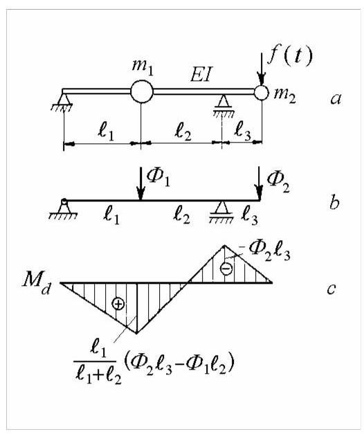
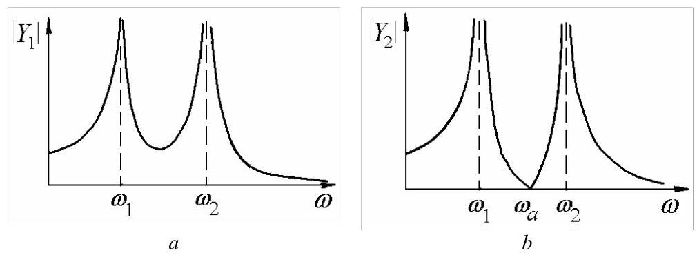
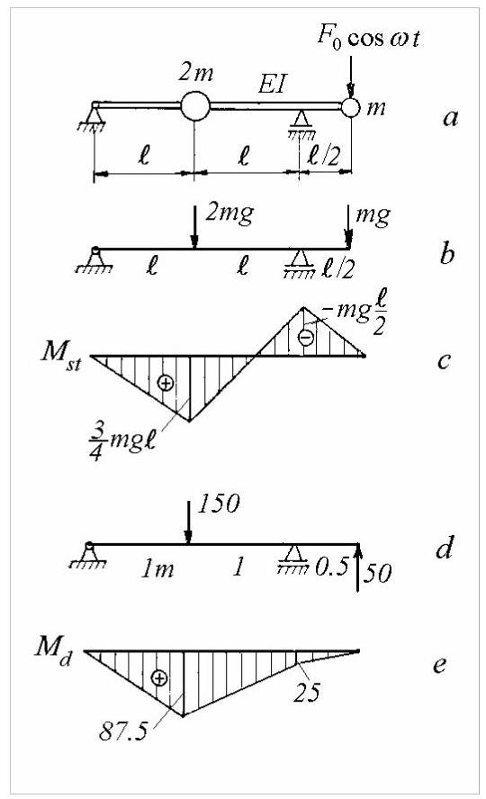

第21篇
4.3.5 Response to Harmonic Excitation
4.3.5 谐波激励响应
Consider the steady-state vibrations of the beam of Fig. 4.20, \(a\) under the action of the force \(f\left( t\right) = {F}_{0}\cos {\omega t}\) acting on mass \({m}_{2}\) .
考虑图4.20所示梁的稳态振动，\(a\)在作用于质量\({m}_{2}\)的力\(f\left( t\right) = {F}_{0}\cos {\omega t}\)作用下。

Fig. 4.20
图4.20
The equations of motion are
运动方程为
or
或
Substituting the steady-state solutions
将稳态解
into equations (4.97) yields
代入方程(4.97)得到
The solutions are
解为
The denominator can be recognized as the characteristic polynomial (4.86).
分母可识别为特征多项式(4.86)。

Fig. 4.21
图4.21
The absolute values of the amplitudes \({Y}_{1}\) and \({Y}_{2}\) are graphically presented in Fig. 4.21. When the forcing frequency equals either of the natural frequencies, the amplitudes grow indefinitely. The system has two resonances marked by peaks in the frequency response curves.
振幅\({Y}_{1}\)和\({Y}_{2}\)的绝对值如图4.21所示。当激励频率等于任一固有频率时，振幅无限增大。系统存在两个共振，在频率响应曲线上表现为峰值。
Antiresonance occurs for \({Y}_{2} = 0\) when
当满足以下条件时，\({Y}_{2} = 0\)发生反共振
If the amplitudes of the forced response are known, the amplitudes of the inertia forces can be calculated so that the amplitude of the dynamic forces acting on the beam (Fig. \({4.20}, b\) ) are
若已知受迫响应的振幅，则可计算惯性力的振幅，从而得到作用于梁上的动态力振幅(图\({4.20}, b\))为
The diagram of dynamic bending moments (Fig. \({4.20}, c\) ) may be then constructed, and the dynamic stresses produced by the harmonic force may be calculated.
随后可绘制动态弯矩图(图\({4.20}, c\))，并计算由谐波力产生的动态应力。
Example 4.7
例4.7
The massless beam of Fig. 4.22, \(a\) has diameter \(d = {40}\mathrm{\;{mm}},\ell = 1\mathrm{\;m}\) , \(E = {210}\mathrm{{GPa}}\) and \(m = {50}\mathrm{\;{kg}}\) . a) Calculate the natural frequencies; b) Determine the amplitudes of forced vibrations produced by a harmonic force of amplitude \({F}_{0} = {20}\mathrm{\;N}\) and frequency \({0.179}\mathrm{\;{Hz}}\) ; c) Draw the diagram of static bending moments and determine the maximum static stress ; d) Draw the diagram of the dynamic bending moments and calculate the amplitude of the maximum dynamic stress.
图4.22所示的无质量梁\(a\)，其直径为\(d = {40}\mathrm{\;{mm}},\ell = 1\mathrm{\;m}\)、\(E = {210}\mathrm{{GPa}}\)和\(m = {50}\mathrm{\;{kg}}\)。a) 计算固有频率；b) 确定由振幅为\({F}_{0} = {20}\mathrm{\;N}\)、频率为\({0.179}\mathrm{\;{Hz}}\)的谐波力产生的受迫振动振幅；c) 绘制静弯矩图并确定最大静应力；d) 绘制动态弯矩图并计算最大动态应力的振幅。
Solution. The flexibility coefficients are
解:柔度系数为
Denoting
记
the frequency equation is
频率方程为
with solutions
其解为
The natural frequencies are
固有频率为

Fig. 4.22
图4.22
For the given numerical data, the forcing frequency corresponds to \(\lambda = {10}\) . From (4.99) we obtain the vibration amplitudes
对于给定的数值数据，激励频率对应于\(\lambda = {10}\)。由式(4.99)可得振动幅值
For the static loading shown in Fig. 4.22, \(b\) , the diagram of static bending moments is presented in Fig. 4.22, \(c\) . The maximum bending moment is \({368}\mathrm{{Nm}}\) and the maximum static stress is \({\sigma }_{st} = {58.5}\mathrm{\;N}/{\mathrm{{mm}}}^{2}\) .
对于图4.22所示的静载荷\(b\)，其静弯矩图如图4.22\(c\)所示。最大弯矩为\({368}\mathrm{{Nm}}\)，最大静应力为\({\sigma }_{st} = {58.5}\mathrm{\;N}/{\mathrm{{mm}}}^{2}\)。
The amplitudes (4.101) of dynamic forces are
动态力的幅值(4.101)为
For the dynamic loading shown in Fig. 4.22, \(d\) , the diagram of dynamic bending moments is given in Fig. 4.22, e. The maximum bending moment is \({87.5}\mathrm{\;{Nm}}\) and the maximum dynamic stress is \({\sigma }_{d} = {14}\mathrm{\;N}/{\mathrm{{mm}}}^{2}\) .
对于图4.22所示的动载荷\(d\)，其动弯矩图如图4.22e所示。最大弯矩为\({87.5}\mathrm{\;{Nm}}\)，最大动应力为\({\sigma }_{d} = {14}\mathrm{\;N}/{\mathrm{{mm}}}^{2}\)。